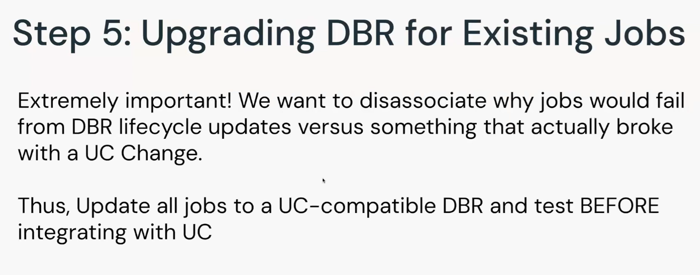
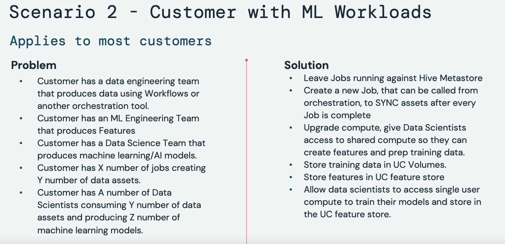

| github.com |
Spark SQL / PySpark command reference |
| databricks.com |
Notebook magic commands
|
| databricks.com |
Software engineering best practices for notebooks |
| databricks.com |
GDPR and CCPA compliance using Delta Lake |
| medium.com |
Orchestrate Databricks jobs from Azure Data Factory using Databricks REST API |
| delta.io |
Z-Ordering (multi-dimensional clustering)

|
| databricks.com |
Slowly Changing Dimension (SCD) type 2 |
| databricks.com |
Change data capture (CDC) with Delta Lake's Change Data Feed |
| linkedin.com |
Z-Order: Visualization and Implementation |
| databricks.com |
The 3Ds of Migrating Teradata Workloads to the Databricks |
| databricks.com |
Types of compute available in Databricks
|
| databricks.com |
Tables Lineage
|
| medium.com |
Unity Catalog’s three-level namespace
|
| databricks.com |
Row Level Security and Column Level Masking |
| databricks.com |
HMS to Unity Table (Managed & External) migration
|
| databricks.com |
Create External Table in the data explorer Tab in DBSQL
|
| databricks.com |
A view can be created from tables and other views in multiple schemas and catalogs
It resides in the third layer of Unity Catalog’s three-level namespace
Use dynamic views to configure fine-grained access control
|
| databricks.com |
Unity Catalog best practices


|
| databricks.com |
Unity Migration Steps
3 metadata objects move from a workspaces to the account level in UC
1] Metastore, 2] User Mgmt, 3] Access Controls

|
| satoricyber.com |
Unity Migration Upgrade Scenerios
Easy Upgrade
Scenerio 1: SYNC the Consumption Tables
Before Architecture-
After Architecture-
Scenerio 2: ML Models

UC + ML Operating Model-
|
| youtube.com |
Tredence UnityGo short demo |
| youtube.com |
Unity Catalog Essentials
-
Unity Catalog Limits
-
How a data query via Unity works
-
Data Explorer tab: data search, discovery and tagging (semantic layering)
-
High level governance in Terraform
-
Row level security and column level masking
-
UC architecture
-
Data access model prior to UC
-
Data access model with UC
-
How to see if a workspace is UC enabled
-
UC integration with External Catalogs like Alation, Collibra, Purview
-
UC migration roadmap
-
Important Roles who assist in UC Migration
-
Managed vs External table
-
Unity catalog Volumes (arbitrary files, emails, ML models data etc.)
-
Data migration to Unity catalog Volumes (arbitrary files, emails, ML models data etc.)
-
UC metastore creation - Catalog/ Schema managed table location (Optional)
-
Managed data sources and External location
-
External location patterns
-
Workspace and storage with/ without Unity
-
Mountpoint to be changed to External Location
-
Create External Table in the data explorer Tab in DBSQL
-
SDLC lifecycle with UC
-
Delta sharing

-
Create External Table in the data explorer Tab in DBSQL
|